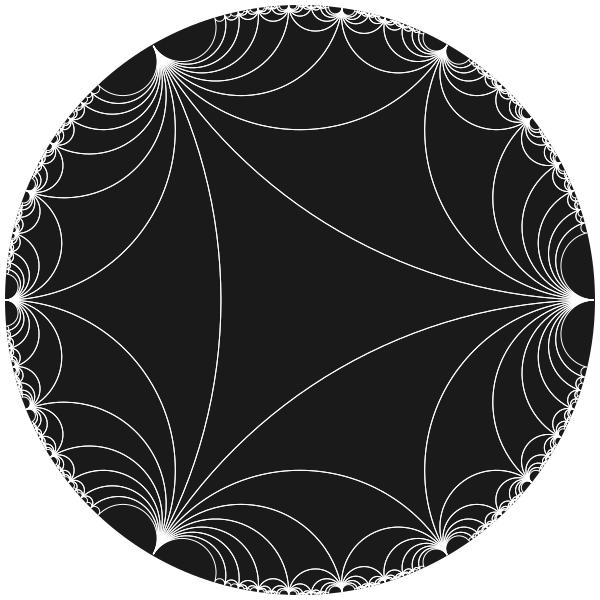
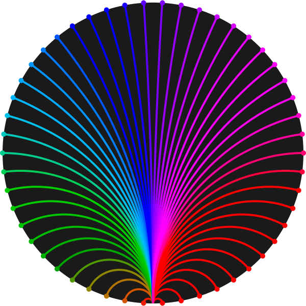
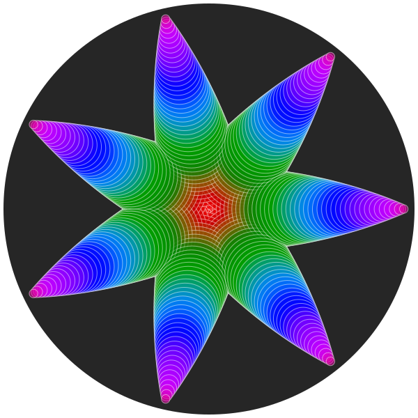
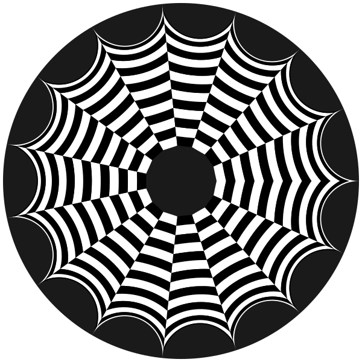
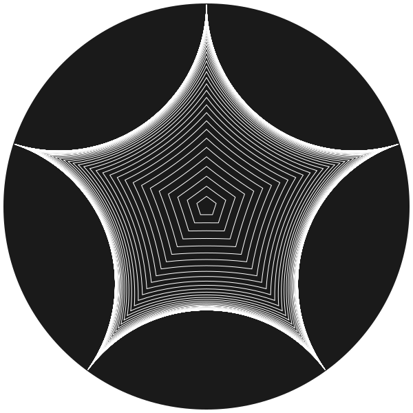
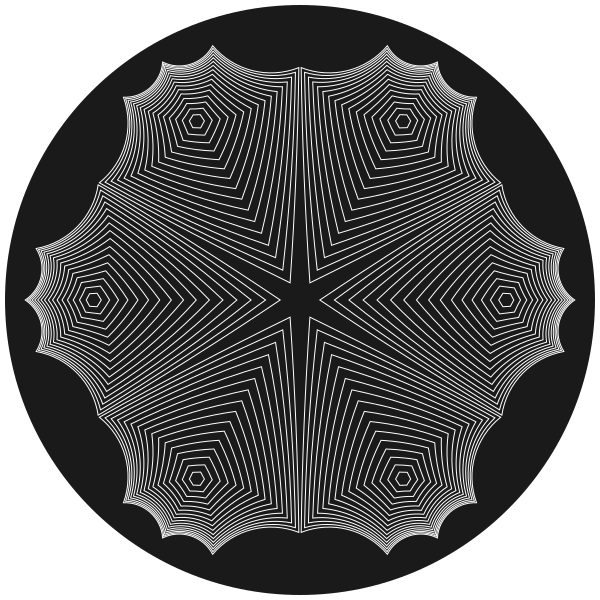

The basics
This package lets you draw hyperbolic geometry using the Poincaré disk model.
The Poincaré disk
The Poincaré disk is a two-dimensional hyperbolic plane. It provides a surface on which you can draw using non-Euclidean geometry. All 2D points are mapped to a unit disk, with all points lying inside it. At the boundary of the circle lies infinity. Here, most of Euclid's geometric postulates apply, but the final (fifth, "parallel") postulate doesn't. You'll have no trouble finding explanatory material on the internet!
In the Poincaré disk model, the shortest path between two points is drawn as a circular arc called a geodesic. The internal angles of triangles add up to less than 180°. Hyperbolic circles are represented as Euclidean circles contained entirely inside the disk.

Famous French mathematician and physicist Henri Poincaré (1854–1912) popularized the hyperbolic disk model in 1905 and it now carries his name. However, it was really a rediscovery of the original work of Eugenio Beltrami some decades earlier.
Overview
Points on the Poincaré disk are represented as complex numbers z, where |z| < 1.
The disk is a unit disk, with (0 + 0im) at the center. The fourcardinal points (E, S, W, and N) are:
1.0 + 0.0im0 + 1.0im-1.0 + 0.0im0 - 1.0im
using PoincareDiskusing Luxor@drawsvg begin background("black") sethue("grey15") draw_poincare_disk(action = :fill) p1 = 1.0 + 0.0im # E p2 = 0 + 1.0im # S p3 = -1.0 + 0.0im # W p4 = 0 - 1.0im # N sethue("cyan") fontsize(30) circle.(complex_to_point.([p1, p2, p3, p4]), 5, :fill) label.(["E", "S", "W", "N"], [:w, :n, :e, :s], complex_to_point.([p1, p2, p3, p4]), offset=20.0)end![](data:image/svg+xml;utf-8,<?xml version="1.0" encoding="UTF-8"?>
<svg xmlns="http://www.w3.org/2000/svg" xmlns:xlink="http://www.w3.org/1999/xlink" width="600" height="600" viewBox="0 0 600 600">
<defs>
<g>
<g id="glyph-446323-0-0">
<path d="M 2.9375 -21.875 L 16.765625 -21.875 L 16.765625 -19.375 L 5.90625 -19.375 L 5.90625 -12.90625 L 16.3125 -12.90625 L 16.3125 -10.421875 L 5.90625 -10.421875 L 5.90625 -2.484375 L 17.03125 -2.484375 L 17.03125 0 L 2.9375 0 Z M 2.9375 -21.875 "/>
</g>
<g id="glyph-446323-0-1">
<path d="M 16.0625 -21.15625 L 16.0625 -18.265625 C 14.9375 -18.804688 13.875 -19.207031 12.875 -19.46875 C 11.875 -19.726562 10.910156 -19.859375 9.984375 -19.859375 C 8.378906 -19.859375 7.140625 -19.546875 6.265625 -18.921875 C 5.390625 -18.296875 4.953125 -17.410156 4.953125 -16.265625 C 4.953125 -15.296875 5.238281 -14.5625 5.8125 -14.0625 C 6.394531 -13.570312 7.5 -13.175781 9.125 -12.875 L 10.90625 -12.515625 C 13.113281 -12.085938 14.742188 -11.34375 15.796875 -10.28125 C 16.847656 -9.226562 17.375 -7.8125 17.375 -6.03125 C 17.375 -3.914062 16.660156 -2.3125 15.234375 -1.21875 C 13.816406 -0.125 11.738281 0.421875 9 0.421875 C 7.957031 0.421875 6.851562 0.300781 5.6875 0.0625 C 4.519531 -0.164062 3.3125 -0.507812 2.0625 -0.96875 L 2.0625 -4.015625 C 3.269531 -3.335938 4.445312 -2.828125 5.59375 -2.484375 C 6.75 -2.148438 7.882812 -1.984375 9 -1.984375 C 10.6875 -1.984375 11.988281 -2.3125 12.90625 -2.96875 C 13.820312 -3.632812 14.28125 -4.582031 14.28125 -5.8125 C 14.28125 -6.882812 13.953125 -7.722656 13.296875 -8.328125 C 12.640625 -8.941406 11.554688 -9.398438 10.046875 -9.703125 L 8.25 -10.046875 C 6.039062 -10.484375 4.441406 -11.171875 3.453125 -12.109375 C 2.472656 -13.046875 1.984375 -14.351562 1.984375 -16.03125 C 1.984375 -17.957031 2.660156 -19.476562 4.015625 -20.59375 C 5.378906 -21.707031 7.257812 -22.265625 9.65625 -22.265625 C 10.675781 -22.265625 11.71875 -22.171875 12.78125 -21.984375 C 13.851562 -21.796875 14.945312 -21.519531 16.0625 -21.15625 Z M 16.0625 -21.15625 "/>
</g>
<g id="glyph-446323-0-2">
<path d="M 1 -21.875 L 3.984375 -21.875 L 8.578125 -3.390625 L 13.171875 -21.875 L 16.5 -21.875 L 21.09375 -3.390625 L 25.671875 -21.875 L 28.6875 -21.875 L 23.1875 0 L 19.46875 0 L 14.859375 -18.984375 L 10.203125 0 L 6.46875 0 Z M 1 -21.875 "/>
</g>
<g id="glyph-446323-0-3">
<path d="M 2.9375 -21.875 L 6.921875 -21.875 L 16.625 -3.578125 L 16.625 -21.875 L 19.5 -21.875 L 19.5 0 L 15.515625 0 L 5.8125 -18.296875 L 5.8125 0 L 2.9375 0 Z M 2.9375 -21.875 "/>
</g>
</g>
</defs>
<rect x="-60" y="-60" width="720" height="720" fill="rgb(0%25, 0%25, 0%25)" fill-opacity="1"/>
<path fill-rule="nonzero" fill="rgb(14.901961%25, 14.901961%25, 14.901961%25)" fill-opacity="1" d="M 595 300 C 595 462.925781 462.925781 595 300 595 C 137.074219 595 5 462.925781 5 300 C 5 137.074219 137.074219 5 300 5 C 462.925781 5 595 137.074219 595 300 Z M 595 300 "/>
<path fill-rule="nonzero" fill="rgb(0%25, 100%25, 100%25)" fill-opacity="1" d="M 600 300 C 600 302.761719 597.761719 305 595 305 C 592.238281 305 590 302.761719 590 300 C 590 297.238281 592.238281 295 595 295 C 597.761719 295 600 297.238281 600 300 Z M 600 300 "/>
<path fill-rule="nonzero" fill="rgb(0%25, 100%25, 100%25)" fill-opacity="1" d="M 305 595 C 305 597.761719 302.761719 600 300 600 C 297.238281 600 295 597.761719 295 595 C 295 592.238281 297.238281 590 300 590 C 302.761719 590 305 592.238281 305 595 Z M 305 595 "/>
<path fill-rule="nonzero" fill="rgb(0%25, 100%25, 100%25)" fill-opacity="1" d="M 10 300 C 10 302.761719 7.761719 305 5 305 C 2.238281 305 0 302.761719 0 300 C 0 297.238281 2.238281 295 5 295 C 7.761719 295 10 297.238281 10 300 Z M 10 300 "/>
<path fill-rule="nonzero" fill="rgb(0%25, 100%25, 100%25)" fill-opacity="1" d="M 305 5 C 305 7.761719 302.761719 10 300 10 C 297.238281 10 295 7.761719 295 5 C 295 2.238281 297.238281 0 300 0 C 302.761719 0 305 2.238281 305 5 Z M 305 5 "/>
<g fill="rgb(0%25, 100%25, 100%25)" fill-opacity="1">
<use xlink:href="%23glyph-446323-0-0" x="557.963867" y="310.935059"/>
</g>
<g fill="rgb(0%25, 100%25, 100%25)" fill-opacity="1">
<use xlink:href="%23glyph-446323-0-1" x="290.478516" y="574.575195"/>
</g>
<g fill="rgb(0%25, 100%25, 100%25)" fill-opacity="1">
<use xlink:href="%23glyph-446323-0-2" x="25" y="310.935059"/>
</g>
<g fill="rgb(0%25, 100%25, 100%25)" fill-opacity="1">
<use xlink:href="%23glyph-446323-0-3" x="288.779297" y="46.870117"/>
</g>
</svg>)
In this package, the important functions are:
hyperbolic_point()hyperbolic_line()hyperbolic_circle()hyperbolic_poly()draw_poincare_disk()hyperbolic_tiling()draw_tiling()complex_to_point()point_to_complex()
All 2D graphics functions are provided by Luxor.jl, which you should probably add to the environment (using Luxor),and you can find the documentation for that package here.
The Luxor.jl method of supplying an action to a drawing function, such as :stroke or :fill, is used here.
Hyperbolic points
The hyperbolic_point(z) function draws a small circle on the current drawing to represent the location of a hyperbolic point at complex coordinate z.
This function has a dotradius keyword that determines the radius of the Luxor circle used to mark the position. All other graphic properties such as color are as set in Luxor.jl before you call the function.
The next example draws points on the disk using the form center + radius * θ.
using PoincareDiskusing Luxor@drawsvg begin sethue("grey40") draw_poincare_disk(action=:fill) sethue("gold") for θ in range(0, 2π, length=35) za = 0.5 + 0.4 * exp(1im * θ) hyperbolic_point(za, dotradius = 4) zb = -0.5 + 0.4 * exp(1im * θ) hyperbolic_point(zb, dotradius = 4) endend
The cis() function
In Julia you can also use the cis() function to generate complex numbers. It calculates exp(im x) using Euler's formula:
$ \cos(x) + i \sin(x) = \exp(i x) $
so cis(π/4) returns 0.7071 + 0.7071im.
using PoincareDiskusing Luxor@drawsvg begin sethue("grey40") draw_poincare_disk(action=:fill) sethue("gold") for θ in range(0, 2π, length=35) za = 0.5 + 0.4cis(θ) hyperbolic_point(za, dotradius = 4) zb = -0.5 + 0.4cis(θ) hyperbolic_point(zb, dotradius = 4) endend
The Poincaré disk
You can add graphics for the Poincaré disk itself with:
draw_poincare_disk(;action=:fill)
The size of the disk, on a Luxor drawing, is determined by the global constant DEFAULT_DISK_RADIUS, which is initially set to 295.0 (so that the Poincare disk fits neatly on the default Luxor drawing size of 600 × 600). The default action is :stroke; you can draw a filled disk with action=:fill.
Hyperbolic lines
Use hyperbolic_line(z1, z2) to construct a hyperbolic line between z1 and z2.
These lines are called geodesics, which are arcs of circles that would if extended meet the edge of the unit circle at right angles.
The default action is :stroke. :fill is not very useful here, but :path would allow you to obtain the path for later use. The function returns either the information for the supporting circle (centerpoint, radius), or (nothing, nothing) if the geodesic is not part of a circle at all (it lies on a diameter).
In the next example, each hyperbolic line starts near the bottom edge (at z1 = Complex(0, 0.999999)) and reaches to each of the positions around the edge generated by the loop. The Colors.Oklch function generates a pleasing set of shades.
using PoincareDiskusing Luxorusing Colors@drawsvg begin sethue("grey10") draw_poincare_disk(action = :fill) setline(4) z1 = 0.999999 * exp(π / 2 * im) for θ in range(0, 2π - 2π / 50, length = 50) sethue(Oklch(0.6, 0.6, 360rescale(θ, 0, 2π))) z2 = 0.999999 * exp(θ * im) hyperbolic_line(z1, z2) # default action is :stroke circle(complex_to_point(z2), 5, :fill) endend
The complex_to_point(z) function converts from disk coordinates to Luxor drawing coordinates, so we can draw a circular dot using Luxor.circle() to mark the end point.
Hyperbolic circles
The hyperbolic_circle(zc, rho) function constructs a hyperbolic circle of hyperbolic radius rho centered at the disk point zc.
Hyperbolic circles are ordinary Euclidean circles, but the actual center/radius differs from the hyperbolic center/radius.
Notice in the next example that the two hyperbolic circles have the same hyperbolic radius (0.9) but look different sizes, because the centers are different.
using PoincareDiskusing Luxor@drawsvg beginsethue("grey15")draw_poincare_disk(action = :fill)setline(5)setopacity(0.6)sethue("magenta")zc = 0.85cis(π / 2)hyperbolic_circle(zc, 0.9) # default action is :strokesethue("cyan")zc = 0.3cis(π / 2)hyperbolic_circle(zc, 0.9, action = :stroke)end" fill-opacity="1" d="M 595 300 C 595 462.925781 462.925781 595 300 595 C 137.074219 595 5 462.925781 5 300 C 5 137.074219 137.074219 5 300 5 C 462.925781 5 595 137.074219 595 300 Z M 595 300 "/>
<path fill="none" stroke-width="5" stroke-linecap="butt" stroke-linejoin="miter" stroke="rgb(100%25, 0%25, 100%25)" stroke-opacity="0.6" stroke-miterlimit="10" d="M 356.050781 536.535156 C 356.050781 567.492188 330.957031 592.589844 300 592.589844 C 269.042969 592.589844 243.949219 567.492188 243.949219 536.535156 C 243.949219 505.578125 269.042969 480.484375 300 480.484375 C 330.957031 480.484375 356.050781 505.578125 356.050781 536.535156 Z M 356.050781 536.535156 "/>
<path fill="none" stroke-width="5" stroke-linecap="butt" stroke-linejoin="miter" stroke="rgb(0%25, 100%25, 100%25)" stroke-opacity="0.6" stroke-miterlimit="10" d="M 462.78125 373.929688 C 462.78125 463.832031 389.902344 536.710938 300 536.710938 C 210.097656 536.710938 137.21875 463.832031 137.21875 373.929688 C 137.21875 284.03125 210.097656 211.152344 300 211.152344 C 389.902344 211.152344 462.78125 284.03125 462.78125 373.929688 Z M 462.78125 373.929688 "/>
</svg>)
Here's a slightly more interesting example that explores the idea that hyperbolic circles with the same designated 'radius' (here 0.3) look different depending on their distance from the center of the Poincaré disk.
using PoincareDiskusing Luxorusing Colors@drawsvg begin sethue("grey15") draw_poincare_disk(action = :fill) setopacity(0.5) setline(1) for k in range(0.1, 0.95, length = 50) for angle in range(0, 2π - 2π/7, length=7) sethue(Oklch(0.5, 0.5, 360k)) zc = k * cis(angle) hyperbolic_circle(zc, 0.3, action = :fillpreserve) sethue("white") strokepath() end endend
Hyperbolic polygons
The hyperbolic_poly() function constructs a hyperbolic polygon and adds it to the current drawing as a Luxor path. Each side of the polygon is a geodesic curve. The default action is :stroke.
This function expects an array of the corners of the polygon, as complex number coordinates.
In the next example, we generate arrays of three random positions on the edge of the disk. Each path is filled and then stroked with white.
using PoincareDiskusing Luxorusing Colorsusing RandomRandom.seed!(62)@drawsvg begin sethue("grey15") draw_poincare_disk(action = :fill) setopacity(0.7) for i in 1:6 z = Complex[] push!(z, 0.99cis(rand() * π)) push!(z, 0.99cis(rand() * 3π / 2)) push!(z, 0.99cis(rand() * 2π)) Random.shuffle!(z) randomhue() hyperbolic_poly(z, action = :fillpreserve) sethue("white") strokepath() endend" fill-opacity="1" d="M 595 300 C 595 462.925781 462.925781 595 300 595 C 137.074219 595 5 462.925781 5 300 C 5 137.074219 137.074219 5 300 5 C 462.925781 5 595 137.074219 595 300 Z M 595 300 "/>
<path fill-rule="nonzero" fill="rgb(85.480496%25, 68.372782%25, 30.448753%25)" fill-opacity="0.7" stroke-width="2" stroke-linecap="butt" stroke-linejoin="miter" stroke="rgb(100%25, 100%25, 100%25)" stroke-opacity="0.7" stroke-miterlimit="10" d="M 9.277344 272.203125 C 61.421875 278.320312 105.582031 313.503906 123.195312 362.964844 C 140.808594 412.425781 128.832031 467.601562 92.289062 505.304688 C 152.710938 444.738281 193.371094 367.296875 208.914062 283.171875 C 224.460938 199.042969 214.160156 112.183594 179.371094 34.027344 C 203.160156 89 196.421875 152.421875 161.609375 201.167969 C 126.796875 249.914062 68.996094 276.867188 9.277344 272.203125 Z M 9.277344 272.203125 "/>
<path fill-rule="nonzero" fill="rgb(63.488944%25, 3.423456%25, 53.83416%25)" fill-opacity="0.7" stroke-width="2" stroke-linecap="butt" stroke-linejoin="miter" stroke="rgb(100%25, 100%25, 100%25)" stroke-opacity="0.7" stroke-miterlimit="10" d="M 17.921875 224.335938 C 202.632812 274.40625 371.445312 370.929688 508.289062 504.714844 C 372.125 370.183594 272.429688 203.214844 218.585938 19.527344 C 234.007812 76.433594 218.140625 137.253906 176.875 179.367188 C 135.613281 221.484375 75.132812 238.59375 17.921875 224.335938 Z M 17.921875 224.335938 "/>
<path fill-rule="nonzero" fill="rgb(65.73317%25, 82.064667%25, 30.742813%25)" fill-opacity="0.7" stroke-width="2" stroke-linecap="butt" stroke-linejoin="miter" stroke="rgb(100%25, 100%25, 100%25)" stroke-opacity="0.7" stroke-miterlimit="10" d="M 392.960938 576.859375 C 384.980469 557.472656 364.585938 546.246094 343.9375 549.878906 C 323.289062 553.507812 307.949219 571.019531 307.0625 591.964844 C 302.777344 399.171875 335.445312 207.339844 403.304688 26.832031 C 337.171875 203.617188 333.523438 397.710938 392.960938 576.859375 Z M 392.960938 576.859375 "/>
<path fill-rule="nonzero" fill="rgb(29.588364%25, 27.974713%25, 8.501949%25)" fill-opacity="0.7" stroke-width="2" stroke-linecap="butt" stroke-linejoin="miter" stroke="rgb(100%25, 100%25, 100%25)" stroke-opacity="0.7" stroke-miterlimit="10" d="M 235.15625 584.761719 C 243.433594 542.871094 224.992188 500.21875 188.800781 477.554688 C 152.613281 454.890625 106.191406 456.921875 72.117188 482.65625 C 91.375 465.472656 96.402344 437.359375 84.296875 414.566406 C 72.191406 391.773438 46.082031 380.199219 21.0625 386.53125 C 78.4375 369.820312 140.375 384.441406 184.222656 425.042969 C 228.070312 465.640625 247.40625 526.269531 235.15625 584.761719 Z M 235.15625 584.761719 "/>
<path fill-rule="nonzero" fill="rgb(39.002358%25, 15.265485%25, 25.725903%25)" fill-opacity="0.7" stroke-width="2" stroke-linecap="butt" stroke-linejoin="miter" stroke="rgb(100%25, 100%25, 100%25)" stroke-opacity="0.7" stroke-miterlimit="10" d="M 260.589844 589.378906 C 265.070312 566.71875 284.605469 550.15625 307.695312 549.441406 C 330.78125 548.730469 351.304688 564.058594 357.171875 586.398438 C 342.652344 518.289062 297.871094 460.519531 235.53125 429.480469 C 173.191406 398.441406 100.101562 397.523438 37.003906 426.984375 C 89.054688 403.042969 149.972656 409.066406 196.332031 442.734375 C 242.6875 476.402344 267.257812 532.476562 260.589844 589.378906 Z M 260.589844 589.378906 "/>
<path fill-rule="nonzero" fill="rgb(16.014738%25, 19.06686%25, 80.664929%25)" fill-opacity="0.7" stroke-width="2" stroke-linecap="butt" stroke-linejoin="miter" stroke="rgb(100%25, 100%25, 100%25)" stroke-opacity="0.7" stroke-miterlimit="10" d="M 18.285156 377.003906 C 62.992188 366.027344 109.917969 383.007812 137.246094 420.054688 C 164.574219 457.101562 166.945312 506.949219 143.253906 546.421875 C 188.773438 476.054688 255.859375 422.324219 334.46875 393.273438 C 413.078125 364.222656 498.984375 361.414062 579.324219 385.273438 C 396.761719 330.117188 202.394531 327.253906 18.285156 377.003906 Z M 18.285156 377.003906 "/>
</svg>)
In the next example, we generate a polar grid of boxes, and render each one as a hyperbolic polygon.
@drawsvg begin sethue("grey10") draw_poincare_disk(action = :fill) setline(2) # radius from 0.2 to ~1 rs = range(0.2, 0.99999, length = 16) # angle from 0 to 2π θs = range(0, 2π, length = 16) polargrid = [r * cis(θ) for r in rs, θ in θs] let fill = 0 for r in 1:(length(polargrid[1, :]) - 1) for c in 1:(length(polargrid[:, 1]) - 1) setgray(fill == 0 ? fill = 1 : fill = 0) p1, p2, p3, p4 = polargrid[r, c], polargrid[r, c + 1], polargrid[r + 1, c + 1], polargrid[r + 1, c] hyperbolic_poly([p1, p2, p3, p4], action = :fill) end end endend
A number of the drawing functions have the radius= keyword:
hyperbolic_point()hyperbolic_line()hyperbolic_circle()hyperbolic_poly()complex_to_point()draw_poincare_disk()draw_tiling()
Use this keyword to specify the radius of the Poincaré disk if you're not using the default value (295.0). Luxor default drawings are 600 × 600, so a disk with radius 295 fits nicely.
hyperbolic_poly() provides these keywords:
radius=DEFAULT_DISK_RADIUSdiskcenter=Oaction=:stroke
The utility function regular_hyperbolic_poly() generates a regular hyperbolic polygon, inside a hyperbolic circle of a given radius.
using PoincareDiskusing Luxor@drawsvg beginsethue("grey10")draw_poincare_disk(action = :fill)setline(1)sethue("white")for i in 0.1:0.1:6 vs = regular_hyperbolic_poly(5, i, rotation = -π/2) hyperbolic_poly(vs, action=:stroke)endend
The hcenter= keyword lets you center the polygon anywhere on the disk:
using PoincareDiskusing Luxor@drawsvg begin sethue("grey10") draw_poincare_disk(action = :fill) setline(1) sethue("white") L = 6 for i in 0.1:0.1:1.6 for pc in [0.7 * cis(θ) for θ in range(0, 2π - 2π / L, length = L)] vs = regular_hyperbolic_poly(6, i, hcenter = pc) hyperbolic_poly(vs, action = :stroke) end endend